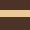
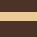

Nekeresdországban Nevenincs királynak egyik szeme sír, a másik nevet. Nevet, mert tündérszép lányának kérője akadt, és sír, mert a kiváló kérőből nem egy, hanem több is van. Hát most hogyan döntse el, melyiknek adja lánya kezét és fele királyságát? Gondolja kikéri udvari tanácsosa, Furfang véleményét. Az udvari tanácsos nevéhez illő ötlettel áll elő: állítsák próba elé a kérőket, s aki a legrátermettebbnek bizonyul, az nyerje el a szépséges királylány kezét. Van a várnak egy elvarázsolt katakombája, ahol a szobák helye folyamatosan változtatható. Ebben rejtenek el kincseket, s az a kérő nyeri el a királylány kezét, aki a leghamarabb szedi össze a rábízott kincseket.
A katakomba szobáit egy 7x7-es négyzetrács cellái jelképezik. Minden szobában adott, hogy hány falán van ajtó. Ha két szomszédos szoba érintkező falán egy-egy ajtó van, akkor át lehet menni egyik szobából a másikba. A négyzetrács páros sorait és oszlopait el lehet tolni, a többi szoba végig rögzített a játék során. Az eltolásokkal az ajtókon keresztül utak nyílnak a szobák között, így lehet eljutni a kincsekhez. Mindegyik kérő arra törekszik, hogy a katakomba szobáinak ötletes eltolásával eljusson a kincsekhez. Aki elsőként találja meg mindahányat és kiindulópontjára sikeresen visszaérkezik az a nyertes.